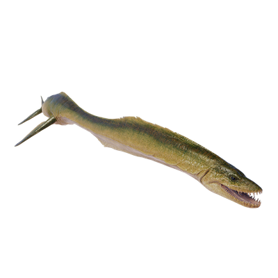

Useful Website
Notable for its extended neck, Styxosaurus is a carnivorous plesiosaur from the late Cretaceous period that can grow up to 11m in length and feeds on fish, squid and other marine life. This genus has very sharp teeth and a powerful jaw, making it one of the most efficient predators of its time.
